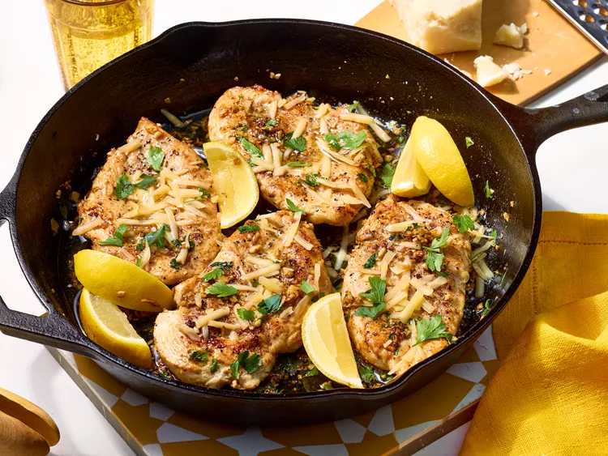

Skillet Garlic Knot Chicken

Description
If you love the buttery, garlicky flavor of garlic knots, this dish is about to become your new favorite. Skillet Garlic Knot Chicken combines the same irresistible mix of melted butter, garlic, herbs, and Parmesan, but with tender, juicy chicken.
"This is exactly the melted butter-garlic-herb combo that gets brushed on top of garlic knots," said recipe developer Melissa Gray. "So flavorful and comes together really quickly!"
Not only does the sauce keep the chicken juicy and full of flavor, but it practically begs for something to soak it up—think mashed potatoes, pasta, or a crusty piece of bread. In just 25 minutes, you'll have an indulgent meal that's both simple and satisfying.
Ingredients
- 4 (4-ounce) chicken breast cutlets
- 1 1/4 teaspoons kosher salt, divided
- 3/4 teaspoon freshly ground black pepper, divided
- 2 tablespoons olive oil
- 6 tablespoons unsalted butter, cut into pieces, divided
- 6 large garlic cloves, finely chopped
- 2 tablespoons roughly chopped fresh flat-leaf parsley, plus more for garnish
- 1/4 cup shredded Parmesan cheese
- lemon wedges, for serving
Directions
- Gather all ingredients.
- Pat chicken dry with paper towels and season chicken all over with 1 teaspoon salt and 1/2 teaspoon pepper; set aside.
- Heat oil and 2 tablespoons of the butter in a large skillet over medium-high. Add chicken in an even layer, in batches if necessary; cook, turning once halfway through, until browned and a thermometer inserted into thickest portion of chicken registers 165 degrees F (74 degrees C), 3 to 4 minutes per side. Remove chicken from skillet, using tongs, and set on plate; set aside. Do not wipe skillet clean.
- With skillet off the heat, add remaining 4 tablespoons butter and stir until melted, about 1 minute. Add garlic and stir until fragrant, about 30 seconds.
- Return skillet to medium, and add chicken in an even layer with any accumulated juices. Add parsley and remaining 1/4 teaspoon each salt and pepper; cook, turning chicken occasionally, until chicken is heated through, about 1 minute.
- Remove from heat. Sprinkle evenly with Parmesan cheese and garnish with additional parsley. Serve immediately with lemon wedges.